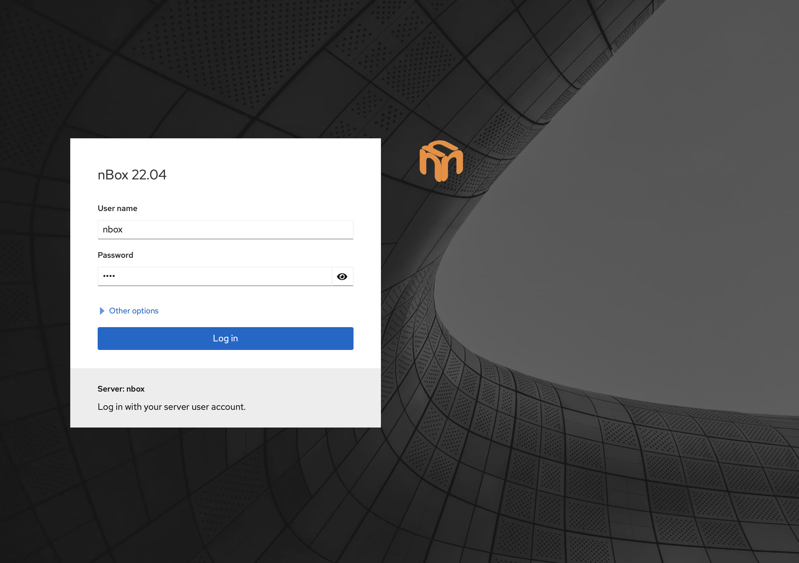
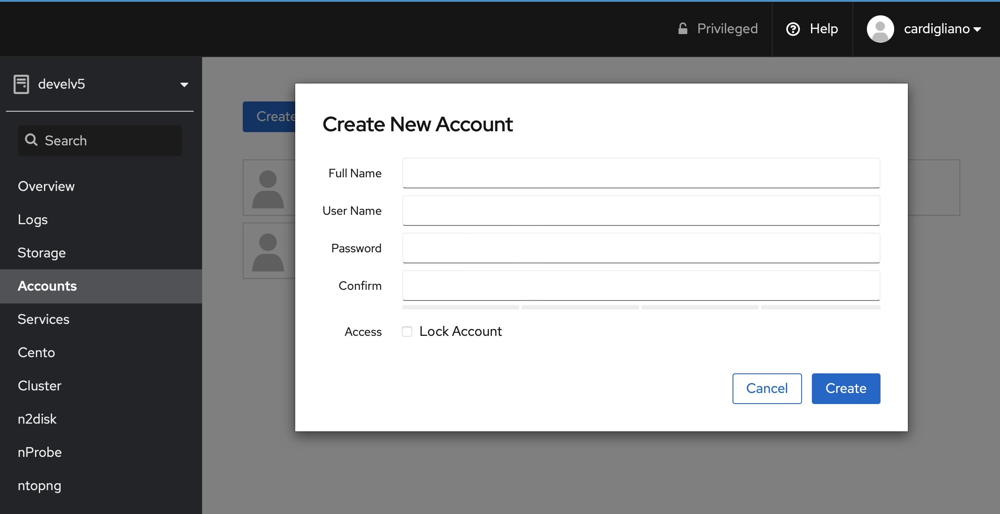
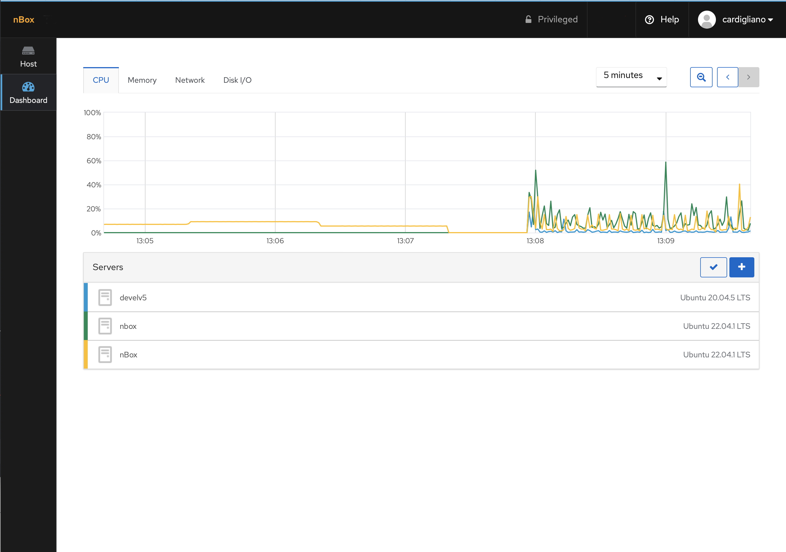

Рекомендации по использованию
Начать использовать nBox очень просто. Запустите коробку, подключите кабель Ethernet к интерфейсу управления. и подключите его к сети. На другом компьютере откройте веб-браузер и посетите https://192.168.160.10:9090 (используйте статический IP-адрес по умолчанию для nBox или проверьте IP-адрес, назначенный с помощью DHCP).
При нажатии на кнопку входа система запросит учетные данные следующим образом:

Если вы используете аппаратное устройство nBox, конфигурация nBox по умолчанию следующая:
Веб-пользователь по умолчанию — «nbox» с паролем «nbox».
Пользователь SSH по умолчанию — «nbox» с паролем «nbox».
IP-адрес и веб-пользователей можно изменять и управлять ими с помощью веб-интерфейса.

После завершения процесса входа пользователь перенаправляется на страницу панели управления. CPU, индикаторы памяти, сети и дискового ввода-вывода отображаются и обновляются в режиме реального времени. Можно настроить несколько устройств с пользовательским интерфейсом nBox и отображать индикаторы. для всех приборов на одной странице.

Доступно боковое меню для перехода к страницам конфигурации аппарата и ntop программного обеспечения.